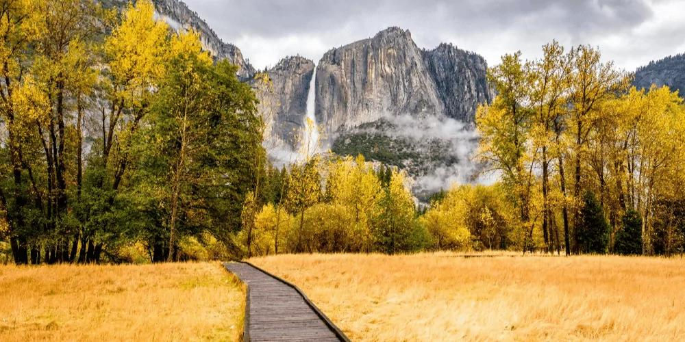

先看地图：六大区域在哪
整个公园大致呈一个南北狭长、中间被深谷切开的形状。 从谷底到高地之间，海拔可以相差一千米以上，这也是为什么同一时间 在园内不同区域会遇到完全不同的天气与景观。
| 区域 | 海拔 | 一句话定位 | 建议停留 |
|---|---|---|---|
| 优胜美地谷 | 约 1,200 m | 全园核心，瀑布与绝壁最集中 | 1–2 天 |
| 图奥勒米草甸 | 约 2,600 m | 高地上的广袤草甸与湖泊 | 半天 – 1 天 |
| 瓦沃纳 | 约 1,200 m | 南入口一带，历史建筑与平缓步道 | 半天 |
| 霍奇登草甸 | 约 1,500 m | 人少清静，途经的谷地草甸 | 1–2 小时 |
| 冰川点 | 约 2,200 m | 俯瞰半圆顶的最佳制高点 | 2–3 小时 |
| 马里波萨巨杉林 | 约 1,600 m | 三千年巨杉，南侧最深处 | 半天 |
优胜美地谷

全园的心脏
约 1.6 公里宽、13 公里长的冰川槽谷，是整个公园的地标集中区。 酋长岩、半圆顶、优胜美地瀑布、新娘面纱瀑布——你听过名字的那些， 几乎全在这里。
这也是交通最方便的区域：园内免费班车贯穿全谷， 多数观景点可从停车场步行抵达。
不容错过
隧道观景台
进入谷底前的必停点，可以一次看到酋长岩、半圆顶与新娘面纱瀑布三处地标。
酋长岩
世界最大的花岗岩独石之一，垂直落差近千米，是攀岩者的圣地。
库克草甸
谷底的湿地草甸环线，铺装平坦，是拍摄半圆顶倒影的经典位置。
镜湖
早春水面平静时能映出半圆顶倒影，夏末水位下降后会变成泥滩。
图奥勒米草甸

高地上的另一片天地
海拔约 2,600 米，是全美最大的亚高山草甸之一。 这里没有谷底的喧嚣——取而代之的是蜿蜒的图奥勒米河、 散落的巨石与远方的山峰。
夏天气温比谷底低 5–8℃,是避暑的好选择； 草甸边缘的 伦贝尔登营地 是园内最受徒步者欢迎的落脚点之一。
看点与步道
- 图奥勒米草甸步道：沿河平缓行走，适合全家，往返约 3 公里。
- 伦贝尔登峰：往返约 5 公里、爬升 300 米，登顶可俯瞰整片草甸。
- 凯瑟德峰 / 大教堂峰：更具挑战的半日到一日线路，适合有经验的徒步者。
- 特纳亚湖：从蒂奥加路南侧支线进入，湖水清澈，是热门游泳与野餐点。
瓦沃纳

南入口的历史小镇
位于公园南侧、靠近南入口，是历史上进入优胜美地的首站。 这里地势平缓、气候温和，与谷底的险峻形成鲜明对比。
最有名的是瓦沃纳酒店——一栋建于 19 世纪的维多利亚式木构建筑， 以及先锋历史中心里的地方史展陈。
瓦沃纳瀑布
约 1.6 公里往返的无障碍步道，是园内最适合推车与轮椅的观瀑路线。
瓦沃纳酒店
历史建筑与大片草坪，夏季傍晚常有露天活动与音乐会。
先锋历史中心
了解公园早期开拓史与原住民文化，设有适合孩子的互动展项。
奇尔努尔纳步道
从瓦沃纳出发的长线徒步，通往园内第二高的常年瀑布。
霍奇登草甸
位于公园西入口（大橡树坪入口，Big Oak Flat）附近的谷地草甸， 海拔约 1,500 米。多数游客从这里经过却不曾停留，因此它意外地成了 园内最清静的区域之一。
这里有一片设施完善的营地，以及多条适合晨昏散步的短步道。 由于靠近西入口，它也是长途自驾者第一晚的理想落点—— 不想开进拥堵谷底的旅行者，往往会选择在此扎营或住宿。
霍奇登草甸营地
约 100 个营位，多数可预订，是进园后最先遇到的营地之一。
草甸环线
平缓的短距离步道，适合清晨观鸟与傍晚散步。
巨杉点步道
向东南延伸的步道，通往一小片巨杉林，游客稀少。
冰川点

看半圆顶的最佳位置
海拔约 2,200 米，是从上方俯瞰整个优胜美地谷的制高点。 半圆顶、内华达瀑布、弗纳尔瀑布、远处的群山—— 在这里一次收进视野。
它也是园内看日落与星空的首选地：地势高、视野开阔、 远离谷底灯光，天气好时银河清晰可见。
马里波萨巨杉林

三千年的见证者
位于公园南侧最深处，是园内最大的巨杉林， 有 500 多棵成年巨杉。其中最著名的「灰熊巨杉」树龄超过三千年。
这些树不是"最高的树"，而是"体积最大的树"—— 一棵成年巨杉的木材量，可以抵得上数十棵普通松树。
怎么玩
- 接驳车：私家车不能开进林中，需在南入口停车场换乘免费接驳车（季节性运行）。
- 巨杉环线：铺装无障碍步道，约 1.5 公里，适合全家，可看到多数知名巨杉。
- 灰熊巨杉步道：继续向林中深入约 3 公里，人少景幽，值得多花时间。
- 注意事项：巨杉根系浅而横向延展，请勿踩踏树根区域，也勿攀爬树干。
怎么选：按天数与季节挑区域
按停留天数
| 天数 | 建议组合 | 说明 |
|---|---|---|
| 1 天 | 优胜美地谷 | 只够走马观花看谷底核心景观，建议一早进园。 |
| 2 天 | 优胜美地谷 + 冰川点 | 第一天谷底徒步，第二天上高地看全景与日落。 |
| 3 天 | 谷底 + 冰川点 + 巨杉林 | 覆盖南北两侧，体验从花岗岩到巨杉的地貌跨度。 |
| 4 天以上 | 再加图奥勒米 + 瓦沃纳 | 深入高地与南侧，节奏放缓，避开人潮。 |
按季节
- 春（4–6 月）：瀑布最盛，谷底是绝对重点；高地多数道路仍封闭。
- 夏（7–8 月）：全部区域开放，但人最多；推荐把重心放到图奥勒米高地避暑。
- 秋（9–10 月）：人潮退去、色彩最佳，是综合体验最好的季节。
- 冬（11–3 月）：主要只能玩谷底与瓦沃纳；冰川点与图奥勒米无法驾车抵达。